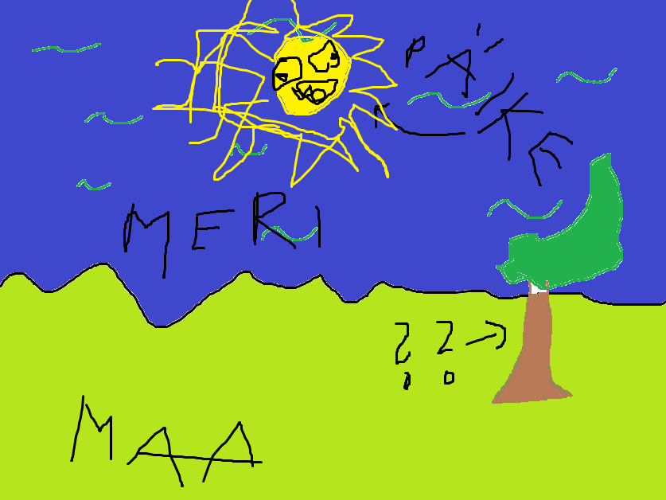

Is it possible to be tired
Is it possible to be not tired
Nooh, alustuseks see, et kunagi ma käisin lasteaias, ja siis kunagi pärast seda käisin koolis, mingi aeg pärast seda aga käisin ma korra poes. Ostsin süüa. Ja siis kunagi joonistasin ma pildi 2 minutit tagasi:
